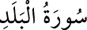

<a name=10676></a><br/>
<br/>
<b> </b><br/>
<b>90- el-BELED SÛRESİ</b><br/>
<i><b>20 âyettir. Mekkî veya baştan dört âyet hâriç Medenî’dir. Adını ilk âyette geçen,</b></i><br/>
<i><b>Mekke’yi anlatan ve “şehir” anlamına gelen “beled” kelimesinden almaktadır.</b></i><br/>
